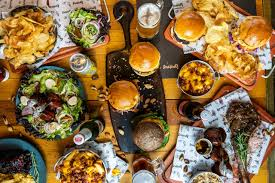

Debunking Diet Myths
Learn the truth behind common diet and nutrition misconceptions.

Myth: Carbs Make You Fat
Fact: Whole grains, fruits, and vegetables are essential for a healthy diet.
Myth: Eating Late at Night Causes Weight Gain
Fact: Weight gain is determined by overall calorie intake, not the time of day you eat.

Myth: Fats Are Always Unhealthy
Fact: Healthy fats from nuts, fish, and olive oil are beneficial for the body.
Myth: Skipping Meals Helps in Weight Loss
Fact: Skipping meals can slow metabolism and lead to overeating later.
Myth: Detox Diets Cleanse Your Body
Fact: Your liver and kidneys naturally detox your body; special detox diets are unnecessary.

Myth: All Processed Foods Are Bad
Fact: Some processed foods, like frozen vegetables and whole-grain bread, can be healthy options.